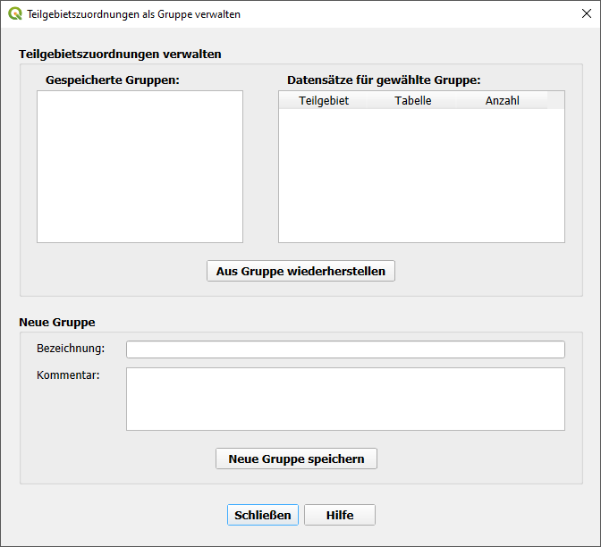

Flächenverarbeitung
Erzeugen von unbefestigten Flächen
Die Funktion  Erzeuge unbefestigte Flächen legt für jede Haltungsfläche (Tabelle tezg) aus dem Zwischenraum
der befestigten Flächen ein Flächenobjekt angelegt. Dieses kann aus mehreren Flächenteilen bestehen.
Erzeuge unbefestigte Flächen legt für jede Haltungsfläche (Tabelle tezg) aus dem Zwischenraum
der befestigten Flächen ein Flächenobjekt angelegt. Dieses kann aus mehreren Flächenteilen bestehen.
Die Attributdaten werden dabei aus den Haltungsflächen übernommen.

Auswahl der zu bearbeitenden Arten von Haltungsflächen (tezg)
Mit Hilfe der Auswahltabelle kann die Bearbeitung auf ausgewählte Haltungsflächen beschränkt werden. Aufgelistet sind alle Abflussparameter und Teilgebiete, die in den Haltungsflächen verwendet werden. Durch die Auswahl einer Zeile in der Tabelle werden alle Haltungsflächen mit der dargestellten Kombination aus Abflussparameter und Teilgebiet für die Bearbeitung ausgewählt.
Ausführliche Erläuterung zu diesem Thema: Erzeugen von unbefestigten Flächen
Die Nutzung dieses Formulars in einem Anwendungsfall ist hier zu sehen.
Erzeugung von Haltungsflächen
Mit der Funktion  Erzeugung von Voronoiflächen zu Haltungen können (große) Haltungsflächen aufgeteilt
werden, sodass jede Fläche eindeutig einer Haltung zugeordnet werden kann.
Erzeugung von Voronoiflächen zu Haltungen können (große) Haltungsflächen aufgeteilt
werden, sodass jede Fläche eindeutig einer Haltung zugeordnet werden kann.

Nur ausgewählte Teilgebiete berücksichtigen: Soll nur ein Teilgebiet bearbeitet werden, dann kann dies hier, über die Aktivierung der Option „Nur ausgewählte Teilgebiete berücksichtigen“ mit anschließender Auswahl des entsprechenden Teilgebiets, geschehen.
Warnung: Sind keine aufzuteilenden Flächen im Vorfeld markiert worden, erscheint diese Warnmeldung. Die Funktion kann so nicht ausgeführt werden.
Entferne Überlappungen

Zuordnung zu Teilgebiet
Mit der Funktion  Zuordnung zu Teilgebiet ist die automatische Zuordnung aller Elemente eines
Entwässerungsnetzes zu einem Teilgebiet möglich. Dabei wird das Teilgebiet automatisch in die jeweilige Spalte der Datentabellen eingetragen.
Zuordnung zu Teilgebiet ist die automatische Zuordnung aller Elemente eines
Entwässerungsnetzes zu einem Teilgebiet möglich. Dabei wird das Teilgebiet automatisch in die jeweilige Spalte der Datentabellen eingetragen.

Haltungen und Flächen: In der Regel sollte die Standardeinstellung „innnerhalb“ nicht geändert werden. Die Option „überlappend“ sollte gewählt werden, wenn sichergestellt werden soll, dass auch Flächen, die nur zum Teil im Teilgebiet liegen (z.B von großen Gebäuden), bei der Bearbeitung des Gebietes berücksichtigt werden. In der darunter liegenden Auswahlbox kann das entsprechende - zuvor erstellte - (Teilgebiet) ausgewählt werden
Die Nutzung dieses Formulars in einem Anwendungsfall ist hier zu sehen.
Teilgebietszuordnung als Gruppe verwalten
Verknüpfungslinien von Einzeleinleitungen zu Haltungen erstellen
Die Funktion  Erzeuge Verknüpfungslinien von Einzeleinleitungen zu Haltungen erzeugt für
jeden Einzeleinleiter, für den noch keine Anbindung erstellt wurde (automatisch oder manuell), eine Linie, die am Punkte des
Einzeleinleiters beginnt und auf der damit verknüpften Haltung endet.
Erzeuge Verknüpfungslinien von Einzeleinleitungen zu Haltungen erzeugt für
jeden Einzeleinleiter, für den noch keine Anbindung erstellt wurde (automatisch oder manuell), eine Linie, die am Punkte des
Einzeleinleiters beginnt und auf der damit verknüpften Haltung endet.

Tabelle Haltungen: Hier können die zu berücksichtigenden Haltungen anhand der Entwässerungsarten ausgewählt werden. Es sollten Schmutzwasser und andere Abwasserarten, die kein Regenwasser enthalten, ausgeschlossen werden
Allgemein: Sind Teilgebiete erstellt worden und es soll in diesen gearbeitet werden, kann dies über die Auswahl in diesem Kasten geschehen
Suchradius: Maximaler Abstand zur Haltung, innnerhalb dessen die Einzeleinleiter berücksichtigt werden. Der Wert sollte ausreichend groß gewählt werden. Ein zu großer Suchradius verlangsamt jedoch den Suchvorgang unnötig, weshalb Werte bis 100 m empfohlen werden
Mit Hilfe der Auswahltabelle kann die Bearbeitung auf Haltungen mit ausgewählten Entwässerungsarten sowie allgemein auf ausgewählte Teilgebiete beschränkt werden.
Ausführliche Erläuterung zu diesem Thema: Anbindungen von Einzeleinleitern
Verknüpfungslinien von Flächen zu Haltungen erstellen
Mit der Funktion  Erzeuge Verknüpfungslinien von Flächen zu Haltungen wird für jede
Fläche, für die noch keine Anbindung erstellt wurde (automatisch oder manuell), eine Linie erzeugt, die innerhalb der Fläche beginnt und
auf der damit verknüpften Haltung endet.
Erzeuge Verknüpfungslinien von Flächen zu Haltungen wird für jede
Fläche, für die noch keine Anbindung erstellt wurde (automatisch oder manuell), eine Linie erzeugt, die innerhalb der Fläche beginnt und
auf der damit verknüpften Haltung endet.
Abhängig von dem Flächenattribut „aufteilen“ ist eine Anbindung pro Fläche oder pro Flächenteilstück und Haltungsfläche (Tabelle „tezg“) vorgesehen.

Filteroptionen
Mit dieser Auswahl kann die Bearbeitung auf Flächen mit den ausgewählten Abflussparametern beschränkt werden
Hier können die zu berücksichtigenden Haltungen anhand der Entwässerungsarten ausgewählt werden. Hier sollten Schmutzwasser und andere Abwasserarten, die kein Regenwasser enthalten, ausgeschlossen werden
Sind Teilgebiete erstellt worden und es soll in diesen gearbeitet werden, kann dies über die Auswahl in diesem Kasten geschehen
Optionen zur Erzeugung von Zuordnungen
Abstand zur nächsten Kante: Die nächste Haltung wird anhand des geringsten Abstandes zur nächsten Kante einer Fläche bestimmt - im Regelfall sollte diese Option gewählt werden
Abstand zum Mittelpunkt: Die nächste Haltung wird anhand des geringsten Abstandes zum Mittelpunkt einer Fläche bestimmt
Suchradius: Maximaler Abstand zur Haltung, innnerhalb dessen die Flächen berücksichtigt werden. Der Wert sollte ausreichend groß gewählt werden. Ein zu großer Suchradius verlangsamt jedoch den Suchvorgang unnötig, weshalb Werte bis 100 m empfohlen werden
Fangradius: Der maximal zulässige Abstand zwischen dem Ende der Verbindungslinie und der zu verknüpfenden Haltung
Verbindungen nur innerhalb Haltungsfläche (tezg) erstellen: Nur in besonderen Fällen zu empfehlen, in denen die Haltungen nur mit den Flächen verknüpft werden sollen, die innerhalb der selben Haltungsfläche liegen
Autokorrektur von Namen in Flächen und Einleitpunkten: Diese Option bewirkt, dass vor Erstellung der Zuordnungen zunächst nicht eindeutige Bezeichnungen von Flächen und Einleitpunkten automatisch so durch eine fortlaufende Nummer ergänzt werden, dass nur noch eindeutige Bezeichnungen vorkommen. Ist diese Option nicht aktiviert, bricht die Erstellung der Zuordnungen bei nicht eindeutigen Bezeichnungen mit einer Fehlermeldung ab
Mit Haltungsflächen verschneiden: Diese Option muss aktiviert werden, wenn Flächen, für die die Option „Aufteilen“ festgelegt wurde, beim Export in ein Simulationsprogramm auf die Haltungsflächen verteilt („verschnitten“) werden sollen
Flächenobjekte bereinigen: Bei Auswahl wird eine automatische Sanierung aller fehlerhaften Flächenobjekte vor der Erstellung der Zuordnungen durchgeführt, dabei werden typische Fehler wie z. B. doppelte Stützstellen und Schleifen beseitigt
Die Zuordnung kann auch manuell vorgenommen und überarbeitet werden, falls bei der automatischen Erstellung unplausible Verbindungen entstanden sind oder sich infolge einer späteren Bearbeitung Änderungen bei den Flächen ergeben haben.
Tabelle zur Auswahl der zu berücksichtigenden Flächen, Haltungen und Haltungsflächen
Mit Hilfe der Auswahltabelle kann die Bearbeitung auf Flächen mit ausgewählten Abflussparametern, Haltungen mit ausgewählten Entwässerungsarten sowie allgemein auf ausgewählte Teilgebiete beschränkt werden.
Ausführliche Erläuterung zu diesem Thema: Grundprinzip
Berechnung von Oberflächenabflussparametern
Mit der Funktion  Oberflächenabflussparameter eintragen werden die
Oberflächenabflussparameter für befestigte und unbefestigte Flächen berechnet. Diese Funktion ist vorrangig für das Simulationsprogramm
HYSTEM-EXTRAN gedacht. In HYSTEM-EXTRAN ist ein Assistent zur Berechnung der Oberflächenabflussparameter vorhanden,
der diese Werte ebenfalls berechnen kann und dessen Anwendung empfohlen wird.
Oberflächenabflussparameter eintragen werden die
Oberflächenabflussparameter für befestigte und unbefestigte Flächen berechnet. Diese Funktion ist vorrangig für das Simulationsprogramm
HYSTEM-EXTRAN gedacht. In HYSTEM-EXTRAN ist ein Assistent zur Berechnung der Oberflächenabflussparameter vorhanden,
der diese Werte ebenfalls berechnen kann und dessen Anwendung empfohlen wird.
Mit Hilfe der Auswahltabelle kann die Bearbeitung auf Haltungen mit ausgewählten Entwässerungsarten sowie allgemein auf ausgewählte Teilgebiete beschränkt werden.

Verknüpfungen bereinigen